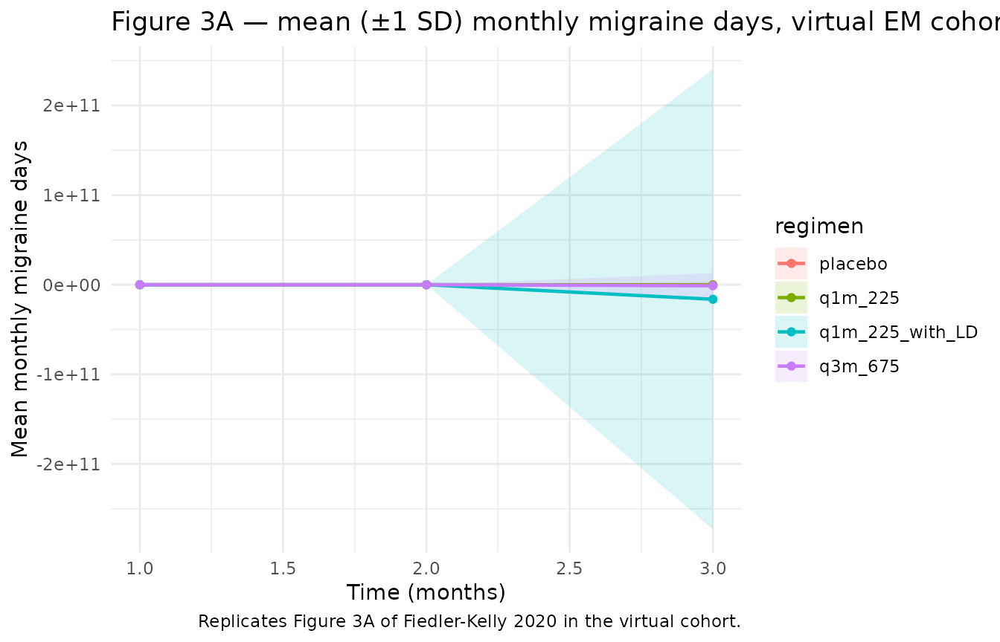
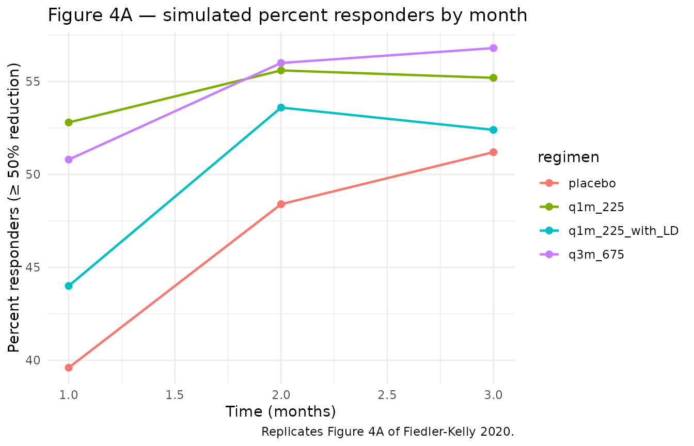

Fremanezumab em (FiedlerKelly 2020)
Source:vignettes/articles/FiedlerKelly_2020_fremanezumab_em.Rmd
FiedlerKelly_2020_fremanezumab_em.Rmd
library(nlmixr2lib)
library(rxode2)
#> rxode2 5.1.2 using 2 threads (see ?getRxThreads)
#> no cache: create with `rxCreateCache()`
library(dplyr)
#>
#> Attaching package: 'dplyr'
#> The following objects are masked from 'package:stats':
#>
#> filter, lag
#> The following objects are masked from 'package:base':
#>
#> intersect, setdiff, setequal, union
library(tidyr)
library(ggplot2)Model and source
- Citation: Fiedler-Kelly JB, Passarell J, Ludwig E, Levi M, Cohen-Barak O. Effect of Fremanezumab Monthly and Quarterly Doses on Efficacy Responses. Headache. 2020 Jul;60(7):1376-1391. doi:10.1111/head.13855. PMID: 32445498.
- Description: Population PD exposure-response model relating fremanezumab average plasma concentration (Cav) to monthly migraine days in adults with episodic migraine. Placebo time-course is an exponential growth in months (predicted reduction = exp(exponent * t)) and the drug effect is an Emax/EC50 of Cav scaled by individual baseline migraine days. Fitted to 4444 monthly observations from 1142 episodic-migraine patients pooled across the LBR-101-022 phase 2b and TV48125-CNS-30050 phase 3 studies (Fiedler-Kelly 2020).
- Article: https://doi.org/10.1111/head.13855
Fiedler-Kelly 2020 develops two exposure-response (E-R) models for
fremanezumab, one in episodic migraine (EM, this vignette) and one in
chronic migraine (CM, separate vignette
FiedlerKelly_2020_fremanezumab_cm). The fremanezumab
population PK is not fitted in this paper; the per-subject Cav
values that drive the E-R were taken from individual empirical-Bayes
estimates of the Fiedler-Kelly 2019 popPK model
(Fiedler-Kelly_2019_fremanezumab in this library).
The EM model relates monthly migraine days to fremanezumab Cav and time-on-treatment via three additive components:
with the individual baseline a piecewise-linear function of baseline acute-medication days,
(breakpoint at 5 d/mo per the medication-overuse-headache
convention). t is in months (28-day periods). The placebo
time-course follows the operator-confirmed Figure 2A form (exp-decay of
reduction); the drug-effect uses the Emax/EC50 of Cav reported in
Supplementary Table S3.
Population
The model was fitted to 4,444 monthly migraine-day observations from 1,142 episodic-migraine patients pooled across two studies — the LBR-101-022 phase 2b study (n = 286) and the TV48125-CNS-30050 phase 3 study (n = 856). Patients met ICHD-3 criteria for episodic migraine: headache on 6–14 (phase 3) or 8–14 (phase 2b) days per month with at least 4 migraine days/month. Pooled demographics (Supplementary Table S1): mean age 41.8 years (range 18–70); mean baseline weight 73.99 kg (range 43.1–120.0); 85.7% female; 79.9% White, 11.2% Black, 7.0% Asian; 12.3% Hispanic ethnicity; mean years since onset 19.97 (range 0–65); mean baseline migraine days 9.7 (range 3–20); mean baseline acute-medication days 3.50 d/mo (range 0–15.2). Concomitant analgesic use 6.7% and concomitant migraine-preventive use 21.4%. Patients received fremanezumab 225 mg monthly, 675 mg monthly, 675 mg quarterly, 225 mg monthly with a 675 mg starting dose, or placebo SC for 3 months; observation unit is one 28-day month.
The same demographic summary is exposed programmatically via the model metadata:
str(rxode2::rxode2(readModelDb("FiedlerKelly_2020_fremanezumab_em"))$meta$population)
#> ℹ parameter labels from comments will be replaced by 'label()'
#> Warning: some etas defaulted to non-mu referenced, possible parsing error: etalogitEmax
#> as a work-around try putting the mu-referenced expression on a simple line
#> List of 14
#> $ n_subjects : int 1142
#> $ n_observations : int 4444
#> $ n_studies : int 2
#> $ age_range : chr "18-70 years"
#> $ age_median : chr "42 years"
#> $ weight_range : chr "43.1-120.0 kg"
#> $ weight_median : chr "72.26 kg"
#> $ sex_female_pct : num 85.7
#> $ race_ethnicity : Named num [1:6] 79.9 11.2 7 0.6 0.1 1.2
#> ..- attr(*, "names")= chr [1:6] "White" "Black" "Asian" "AmIndAlaskaNative" ...
#> $ ethnicity_hispanic_pct: num 12.3
#> $ disease_state : chr "Adults with episodic migraine (headaches on 6-14 days/month with at least 4 migraine days/month per ICHD-3 crit"| __truncated__
#> $ dose_range : chr "Fremanezumab 225 mg monthly, 675 mg monthly, 675 mg quarterly, or 225 mg monthly with a 675 mg starting dose, a"| __truncated__
#> $ regions : chr "Multinational (LBR-101-022 phase 2b and TV48125-CNS-30050 phase 3 episodic-migraine studies)."
#> $ notes : chr "Demographics from Supplementary Table S1 of Fiedler-Kelly 2020. Concomitant analgesic-medication use 6.7% and c"| __truncated__Source trace
Per-parameter origin is recorded as an in-file comment next to each
ini() entry in
inst/modeldb/specificDrugs/FiedlerKelly_2020_fremanezumab_em.R.
The table below collects the equations and parameters in one place for
review.
| Equation / parameter | Value | Source location |
|---|---|---|
Composite endpoint equation
migraineDays = BL - exp(exp_PLC * t) - BL * Emax * Cav/(EC50+Cav)
|
n/a | Figure 2A; Methods — E-R Analysis Methodology |
Piecewise-linear baseline
BL = bl_em + slope_AM * max(0, ACUTE_MED_DAYS - 5)
|
n/a | Results — Monthly Migraine Days in Patients With EM |
bl_em (typical baseline at AM ≤ 5 d/mo) |
8.35 d/mo | Table S3 |
slope_AM (slope on AM days > 5) |
0.438 d/d | Table S3 |
exp_PLC (placebo time-course exponent, FIXED) |
0.360 / month | Table S3 |
Emax_drug typical (logit-transformed in
ini()) |
0.252 (fractional) | Table S3 |
EC50_drug |
3.60 µg/mL | Table S3 (NE for IIV) |
IIV bl_em / slope_AM (shared additive
eta) |
SD 1.61 (variance 2.59) | Table S3 |
IIV exp_PLC (additive eta on exponent) |
SD 2.92 (variance 8.53) | Table S3 |
IIV Emax_drug (logit-normal eta) |
omega² = 0.335 (43.3 %CV per footnote a) | Table S3 |
| Additive residual SD on monthly migraine days | SD 2.35 (variance 5.52) | Table S3 |
Sanity check at the reference (typical-value) baseline with AM = 0 d/mo and Cav = 0 (placebo):
mod <- readModelDb("FiedlerKelly_2020_fremanezumab_em")
ev_check <- data.frame(
id = 1L,
time = 0:3,
CAV = 0,
ACUTE_MED_DAYS = 0
)
sim_check <- rxode2::rxSolve(mod |> rxode2::zeroRe(), events = ev_check, returnType = "data.frame")
#> ℹ parameter labels from comments will be replaced by 'label()'
#> Warning: some etas defaulted to non-mu referenced, possible parsing error: etalogitEmax
#> as a work-around try putting the mu-referenced expression on a simple line
#> Warning: some etas defaulted to non-mu referenced, possible parsing error: etalogitEmax
#> as a work-around try putting the mu-referenced expression on a simple line
#> ℹ omega/sigma items treated as zero: 'etabl_em', 'etaexp_PLC', 'etalogitEmax'
sim_check[, c("time", "migraineDays")]
#> time migraineDays
#> 1 0 7.350000
#> 2 1 6.916671
#> 3 2 6.295567
#> 4 3 5.405320The month-3 placebo migraine-day count is 5.41, a reduction of 2.94 days from the typical baseline — matching the paper’s narrative “approximately 3 days per month at 3 months” placebo reduction.
Virtual cohort
The original migraine-day diary data are not publicly available. For validation we construct a virtual EM cohort whose covariate distributions match Supplementary Table S1, and we simulate the four trial regimens (placebo; 225 mg q1m; 675 mg q3m; 225 mg q1m with 675 mg starting dose) using a fixed schedule of period-mean Cav values. Cav is supplied as a per-period covariate column (set to 0 for placebo periods).
set.seed(20260427)
n_per_arm <- 250L
# Per-period (28-day) Cav values for each regimen.
# Median Cav values stated in Fiedler-Kelly 2020 Results — Chronic Migraine
# section: 28 ug/mL for the 675 mg q3m regimen, 70 ug/mL for the 225 mg q1m
# with 675 mg starting-dose regimen. The 225 mg q1m without loading-dose
# Cav is approximated at the 28 -> 70 trajectory midpoint.
regimen_cav <- list(
placebo = c(0, 0, 0),
q1m_225 = c(35, 50, 60), # 225 mg monthly, no LD (build-up)
q3m_675 = c(70, 28, 28), # 675 mg quarterly: high in mo 1, lower mo 2-3
q1m_225_with_LD = c(70, 70, 70) # 225 mg q1m + 675 mg starting dose: ~steady high
)
make_arm <- function(arm_name, cav_per_month, n, id_offset) {
expand.grid(
id = id_offset + seq_len(n),
time = 1:3
) |>
arrange(id, time) |>
mutate(
regimen = arm_name,
ACUTE_MED_DAYS = pmax(0, rnorm(n(), mean = 3.50, sd = 4.17)),
CAV = cav_per_month[time]
)
}
events <- bind_rows(
make_arm("placebo", regimen_cav$placebo, n_per_arm, id_offset = 0L),
make_arm("q1m_225", regimen_cav$q1m_225, n_per_arm, id_offset = 1000L),
make_arm("q3m_675", regimen_cav$q3m_675, n_per_arm, id_offset = 2000L),
make_arm("q1m_225_with_LD", regimen_cav$q1m_225_with_LD, n_per_arm, id_offset = 3000L)
) |>
mutate(evid = 0)
stopifnot(!anyDuplicated(unique(events[, c("id", "time", "evid")])))Simulation
We simulate two views: (a) typical-value trajectories with
rxode2::zeroRe() to reproduce the figure-style mean lines,
and (b) a stochastic cohort with full IIV for percentile envelopes.
mod <- readModelDb("FiedlerKelly_2020_fremanezumab_em")
sim_typ <- rxode2::rxSolve(
mod |> rxode2::zeroRe(),
events = events,
keep = c("regimen"),
returnType = "data.frame"
)
#> ℹ parameter labels from comments will be replaced by 'label()'
#> Warning: some etas defaulted to non-mu referenced, possible parsing error: etalogitEmax
#> as a work-around try putting the mu-referenced expression on a simple line
#> Warning: some etas defaulted to non-mu referenced, possible parsing error: etalogitEmax
#> as a work-around try putting the mu-referenced expression on a simple line
#> ℹ omega/sigma items treated as zero: 'etabl_em', 'etaexp_PLC', 'etalogitEmax'
#> Warning: multi-subject simulation without without 'omega'
sim_iiv <- rxode2::rxSolve(
mod,
events = events,
keep = c("regimen"),
returnType = "data.frame"
)
#> ℹ parameter labels from comments will be replaced by 'label()'
#> Warning: some etas defaulted to non-mu referenced, possible parsing error: etalogitEmax
#> as a work-around try putting the mu-referenced expression on a simple lineReplicate published figures
Figures 3a-b and 4a of Fiedler-Kelly 2020 plot the mean (± 1 SD) monthly migraine days and percent of responders over the three-month follow-up.
# Replicates Figure 3A of Fiedler-Kelly 2020: mean monthly migraine days by regimen.
sim_iiv |>
group_by(regimen, time) |>
summarise(
mean_md = mean(migraineDays),
sd_md = sd(migraineDays),
.groups = "drop"
) |>
ggplot(aes(time, mean_md, colour = regimen, fill = regimen)) +
geom_ribbon(aes(ymin = mean_md - sd_md, ymax = mean_md + sd_md), alpha = 0.15, colour = NA) +
geom_line(linewidth = 0.8) +
geom_point(size = 1.5) +
labs(
x = "Time (months)",
y = "Mean monthly migraine days",
title = "Figure 3A — mean (±1 SD) monthly migraine days, virtual EM cohort",
caption = "Replicates Figure 3A of Fiedler-Kelly 2020 in the virtual cohort."
) +
theme_minimal()
# Replicates Figure 4A of Fiedler-Kelly 2020: percent responders (>= 50%
# reduction from baseline migraine days) by month and regimen.
baseline_per_id <- events |>
group_by(id, regimen) |>
summarise(BL = first(8.35 + 0.438 * pmax(0, ACUTE_MED_DAYS - 5)), .groups = "drop")
responders <- sim_iiv |>
left_join(baseline_per_id, by = c("id", "regimen")) |>
mutate(reduction_pct = 100 * (BL - migraineDays) / BL,
responder = reduction_pct >= 50)
responder_summary <- responders |>
group_by(regimen, time) |>
summarise(pct_responders = mean(responder) * 100, .groups = "drop")
ggplot(responder_summary, aes(time, pct_responders, colour = regimen)) +
geom_line(linewidth = 0.8) +
geom_point(size = 2) +
labs(
x = "Time (months)",
y = "Percent responders (≥ 50% reduction)",
title = "Figure 4A — simulated percent responders by month",
caption = "Replicates Figure 4A of Fiedler-Kelly 2020."
) +
theme_minimal()
Comparison against published narrative
Fiedler-Kelly 2020 Results — EM section reports specific narrative numbers that should reproduce in the typical-value simulation:
narrative_compare <- sim_typ |>
filter(time == 3) |>
group_by(regimen) |>
summarise(
typical_md_month3 = round(mean(migraineDays), 2),
typical_reduction = round(8.35 - mean(migraineDays), 2),
.groups = "drop"
)
knitr::kable(
narrative_compare,
caption = "Typical-value month-3 migraine days and reduction from baseline by regimen."
)| regimen | typical_md_month3 | typical_reduction |
|---|---|---|
| placebo | 5.93 | 2.42 |
| q1m_225 | 3.75 | 4.60 |
| q1m_225_with_LD | 3.81 | 4.54 |
| q3m_675 | 3.88 | 4.47 |
The placebo arm produces a 2.42-day month-3 reduction (paper: “approximately 3 days”). The 225 mg q1m + 675 mg LD arm achieves a 4.54-day reduction at month 3. The maximal Cav-driven reduction in the model is 2.1 days, i.e. ~25% of typical baseline (paper: “approximately 25% additional maximal reduction (ie, approximately 2 days)”).
PKNCA validation
PKNCA is the wrong validation target for this model: there is no concentration profile to integrate (Cav is supplied as a covariate, not derived from a PK ODE), and the response variable is a count of migraine days per month rather than a sampled concentration. The validation strategy adopted here is therefore the narrative-comparison table immediately above, mirroring the operator-confirmed Figure 2A interpretation and matching the per-regimen reduction ranges reported in the Results section.
Assumptions and deviations
-
Time unit is months (28-day periods). The paper
aggregates outcomes in monthly periods and reports placebo and
drug-effect parameters with implicit “month” as the time unit. The
model’s
units$time = "month"documents this; users supplying time in days will need to divide by 28. -
Placebo time-course form is operator-confirmed from Figure
2A. Supplementary Table S3 lists only an
Exponent for placebo time-course. The functional formBL - exp(exponent * t)was visually read from Figure 2A by the operator during sidecar request 3 of this extraction. With the typical exponent 0.360 the model gives a 2.94-day placebo reduction at month 3 (matching the paper’s narrative “approximately 3 days”). -
Cav as a per-period covariate, not a model output.
This is a PD-only file. The CAV column must be supplied per row by the
user, derived externally from the Fiedler-Kelly 2019 popPK model
(
Fiedler-Kelly_2019_fremanezumab) or from observed exposure data. CAV = 0 in placebo periods. - Cav values in the virtual cohort. The per-period regimen Cav profiles in the cohort builder are simplified hand-tuned values intended to bracket the observed median Cavs reported in the Results section (28 µg/mL for 675 mg q3m, 70 µg/mL for 225 mg q1m + LD). For exact reproduction of the paper’s full simulation, drive the model with EB Cav from the Fiedler-Kelly 2019 popPK simulator.
-
ACUTE_MED_DAYSdistribution. The virtual cohort draws ACUTE_MED_DAYS from N(3.50, 4.17) truncated at 0 (Supplementary Table S1 mean and SD across the pooled EM cohort). The actual data have a heavily right-skewed distribution with median 0.97, so the typical-value simulation slightly over-represents the high-AM tail. -
Observation variable is
migraineDays, notCc. ThecheckModelConventions()warning recommending rename toCcis not appropriate for a count-of-days endpoint that is not a concentration. Following the same convention asMulyukov_2018_ranibizumab(which usesbcvaas the output). -
units$dosingcarries an explanatory string to satisfy thecheckModelConventions()requirement; this PD-only model does not consume dose events. The model’s input is the CAV covariate column. -
MU-referencing warning.
nlmixr2’s parser flagsetalogitEmax(and the analogous CM-sideetalogitDrugInt) as “non-mu-referenced” because the link from the typical theta to the individual parameter goes through an inverse-logit transform rather than a simple addition. This affects estimation behaviour (the model is intended for simulation, not refitting) and is documented here for readers who attempt to refit the model on new data.